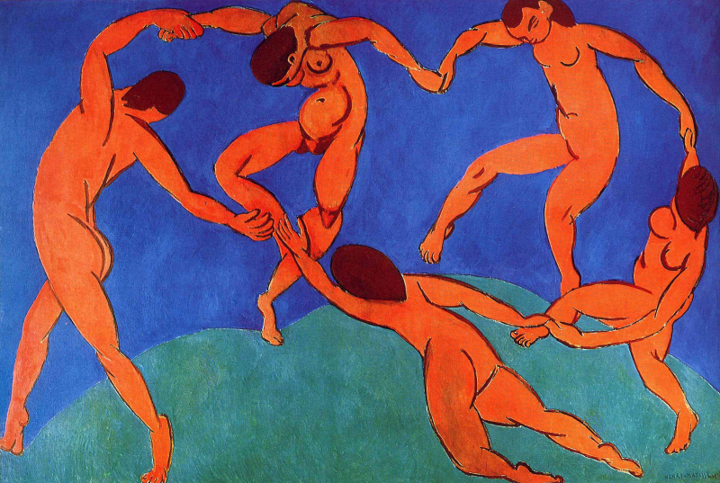
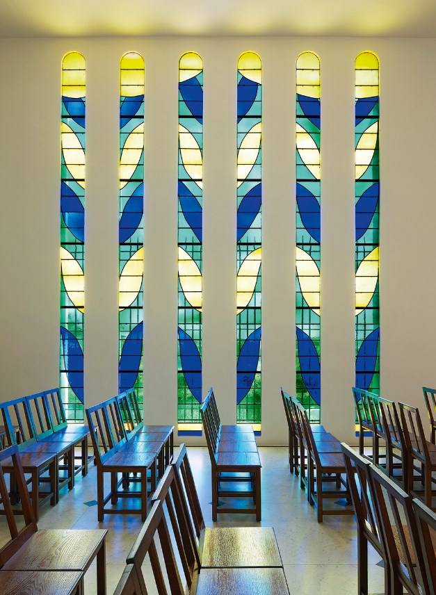

París celebra la vitalidad de Henri Matisse, con una exposición que reúne más de 200 obras maestras. Bajo el título "La alegría de vivir", esta muestra no solo recorre sus óleos fauvistas, sino que profundiza en sus años finales, cuando la enfermedad lo llevó a "dibujar con tijeras", creando un universo de formas orgánicas que hoy parecen más vigentes que nunca en su búsqueda de armonía..
Arquitecto de la serenidad
Organizada por el Centro Pompidou en las salas restauradas del Grand Palais, esta retrospectiva ocurre en un momento de resurgimiento del interés por el arte moderno. Matisse, quien fuera criticado en su juventud por la "violencia" de sus colores, es hoy visto como un arquitecto de la serenidad, alguien que buscó que su arte fuera como un "buen sillón" para el espíritu.

La vida en el arte
La exposición está dividida por atmósferas emocionales más que por orden cronológico. Al entrar, el espectador es golpeado por la luz del Mediterráneo: verdes esmeralda, rojos saturados y azules profundos que definieron su etapa fauvista. Las pinceladas son libres, casi salvajes, desafiando la necesidad de que una cara sea rosada o un árbol sea marrón; en Matisse, el color es el sentimiento puro antes de ser razón.
Hacia la mitad del recorrido, las salas se vuelven más amplias para albergar sus famosos recortes de papel. Tras ser diagnosticado de cáncer, el artista comenzó a recortar papeles pintados con gouache, creando composiciones fluidas y rítmicas. Es fascinante observar cómo la limitación física no mermó su libertad creativa, sino que la sintetizó en formas casi abstractas que bailan sobre las paredes blancas del museo.
"El color fue puesto en nosotros para ser sentido, no para ser entendido. No pinto cosas, pinto la diferencia entre las cosas."
— Henri Matisse, citado en los diarios de la curaduría de la muestra.
El montaje incluye también bocetos inéditos y fotografías de su estudio en Niza, permitiendo al público entender el proceso meticuloso detrás de lo que parece simple. La respuesta del público ha sido masiva, con largas filas que serpentean junto al Sena, demostrando que la sed de belleza y optimismo artístico sigue siendo una necesidad humana fundamental.

La accesibilidad, ¿Nuevo estándar?
Esta muestra reafirma a París como la capital mundial del estudio del modernismo, atrayendo una inversión significativa en seguros de arte y transporte especializado. Además, la curaduría ha puesto énfasis en la accesibilidad, creando réplicas táctiles de las texturas de los recortes para personas con discapacidad visual, un estándar que se espera sea obligatorio en las próximas grandes exhibiciones en Europa.
Se prevé que la "Matisse-manía" impulse un mercado de diseño inspirado en sus patrones, colaborando con marcas de moda sostenibles que utilicen sus formas orgánicas. Es una validación de que el arte del siglo XX sigue siendo una fuente de inspiración técnica para el diseño contemporáneo, desde la arquitectura hasta la interfaz de usuario digital.
A nivel educativo, la exposición cerrará con un simposio internacional sobre la psicología del color, analizando cómo la estética de Matisse ha influido en la arteterapia moderna. El legado del artista se proyecta así no solo como un objeto de contemplación, sino como una herramienta activa para la salud mental y el bienestar colectivo en las ciudades modernas.